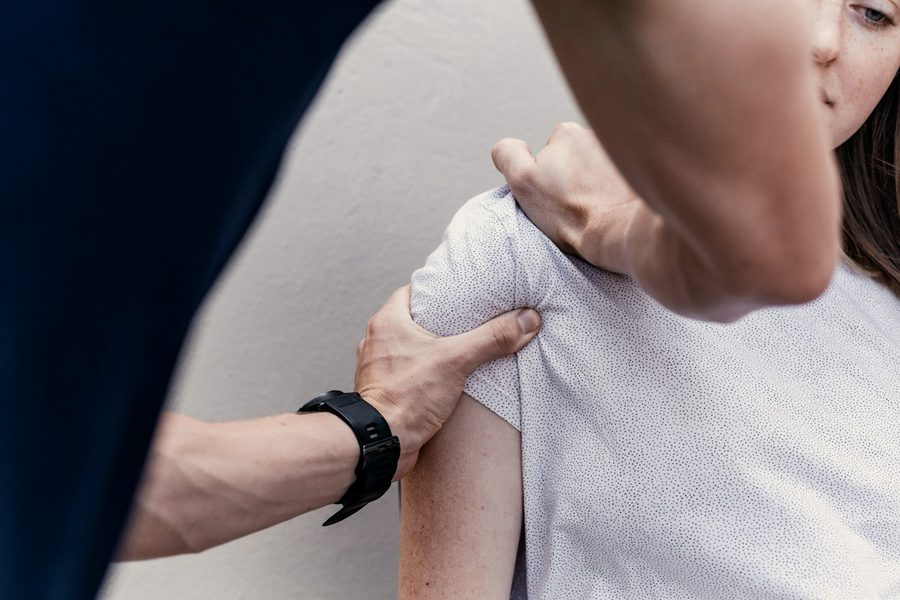
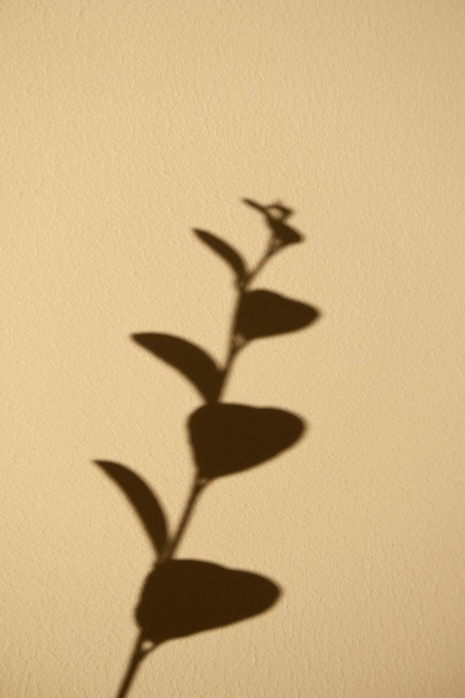
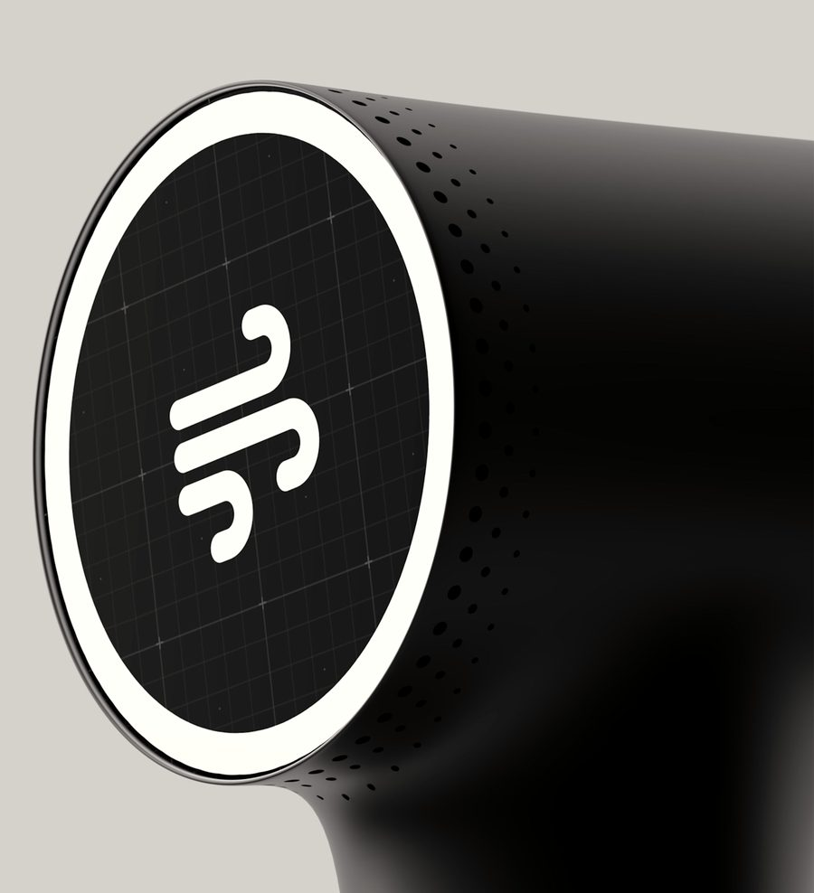
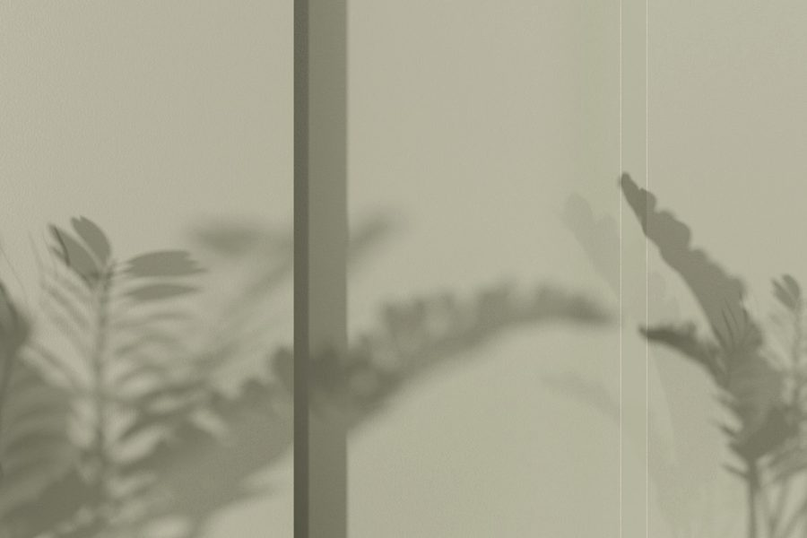
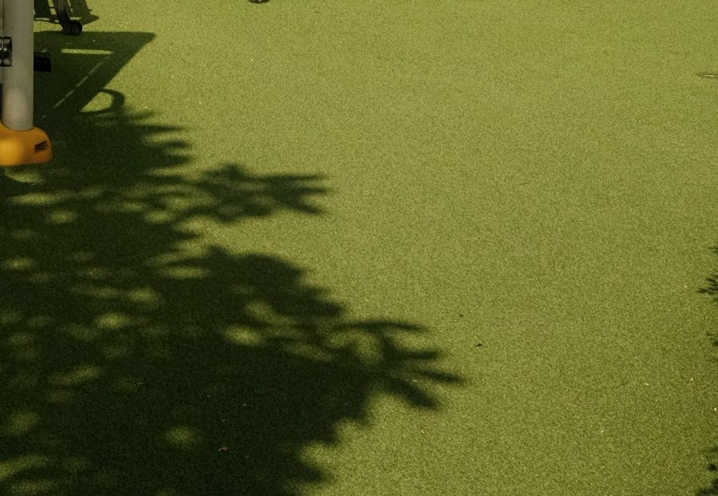

Fisioterapia y osteopatía
La base de la casa. Manos, movimiento y tiempo para escuchar qué te pasa antes de tocar nada. Lesiones, dolor que se enquista, recuperación tras una operación.
Pedir cita por teléfono
Fisioterapia y osteopatía en Carballo. Suelo pélvico, mandíbula, pilates terapéutico, embarazo y posparto. Para quien entrena, para quien trabaja de pie y para quien solo quiere volver a moverse sin pensar en ello.
Consultando horario…Toca una zona de la silueta (o usa las flechas del teclado) y te contamos qué suele traer a la gente hasta aquí y con qué lo trabajamos en AURA.
Elige una zona para ver el detalle.
Apretar los dientes de noche, chasquidos al abrir la boca, dolor de cabeza que empieza en la sien. La mandíbula también se trata.
Tratamiento de ATM (articulación temporomandibular) con fisioterapia y osteopatía.
Suelo pélvicoDespués del parto, con los años, tras una cirugía o simplemente porque nadie te habló nunca de él. Se entrena, y se nota.
Fisioterapia de suelo pélvico e hipopresivos; entrenamiento en embarazo y posparto; talleres.
CuelloLo típico: horas de pantalla, dormir torcido, un frenazo, o ese dolor de cabeza que empieza en la nuca.
Fisioterapia y osteopatía. Si conviene, ecógrafo, Indiba u ondas de choque.
Levantar el brazo por encima de la cabeza y que "pinche". Nadar, lanzar, cargar cajas, dormir de ese lado.
Fisioterapia y osteopatía. Si conviene, ecógrafo, Indiba u ondas de choque.
Codo y muñecaGestos repetidos: ratón, herramientas, raqueta, pesas. Se acumula y un día duele al abrir un bote.
Fisioterapia y osteopatía. Si conviene, ecógrafo, Indiba u ondas de choque.
LumbarLa zona que más gente trae por la puerta. Cargar, agacharse mal, muchas horas sentado o un entreno que fue demasiado.
Fisioterapia y osteopatía, pilates terapéutico y funcional. Si conviene, Indiba u ondas de choque.
CaderaCorrer, sentadillas, o simplemente muchos años de pie. La cadera manda en cómo caminas y en cómo te duele la rodilla.
Fisioterapia y osteopatía, pilates terapéutico y funcional. Si conviene, ecógrafo o Indiba.
RodillaLa del fútbol, la de correr, la de la operación. Volver a bajar escaleras sin pensar en ella es el objetivo.
Fisioterapia y osteopatía, pilates funcional. Si conviene, ecógrafo, Indiba u ondas de choque.
Tobillo y pieEl esguince que "ya se pasó" y no se pasó. La planta que duele al primer paso de la mañana. La base de todo lo demás.
Fisioterapia y osteopatía, pilates funcional. Si conviene, ecógrafo, Indiba u ondas de choque.
Siete formas de trabajar contigo, tal como las cuenta la clínica en sus redes. Todas con cita previa y en la misma sala de luz de Rúa Baixa.
La base de la casa. Manos, movimiento y tiempo para escuchar qué te pasa antes de tocar nada. Lesiones, dolor que se enquista, recuperación tras una operación.
Pedir cita por teléfono
Pérdidas, posparto, dolor pélvico o prevención. Valoración, tratamiento y ejercicio para una zona de la que casi nadie habla y casi todo el mundo necesita.
Pedir cita por teléfonoBruxismo, chasquidos, dolor al masticar o dolores de cabeza que empiezan en la sien. Tratamiento de la articulación temporomandibular.
Pedir cita por teléfono
Tecnología para ver lo que pasa y acelerar lo que tarda: ecografía para valorar, Indiba y ondas de choque cuando el tejido necesita un empujón.
Pedir cita por teléfono
Pilates con criterio de fisio: para tu espalda, tu cadera o tu rodilla, no para la foto. Grupos pequeños y ejercicio que se traslada a la vida real.
Pedir cita por teléfonoMoverte bien mientras el cuerpo cambia y recuperarlo después con cabeza. Preparación física para el parto y vuelta al ejercicio sin prisas.
Pedir cita por teléfono
Preparación al parto, posparto y otros temas de cuerpo, en grupo y con tiempo para preguntar. Consulta fechas por teléfono o en redes.
Pedir cita por teléfono
Hora de Carballo. Se calcula en tu navegador; si vienes con prisa, llama antes.
seguidas de lunes a jueves. Antes del trabajo, a mediodía o al salir de entrenar.
solo por la mañana, de 9:00 a 15:00. Fin de semana cerrado.
Llama al 981 75 73 69. Si no cogemos, estamos en camilla: te devolvemos la llamada.
5,0/5
76 reseñas en Google, todas contando la misma historia. Estas tres son literales; solo se abrevia el apellido.
Ver reseñas en GoogleLlevo años viniendo a esta clínica y cada vez que lo hago me reafirmo en por qué sigo eligiéndola. El trato es cercano, profesional y siempre se nota que hay una vocación real detrás de cada tratamiento. Ahora estoy en manos de Marta, su especialista en ATM, para el tratamiento del bruxismo, una excelente profesional. Un lugar en el que te sientes bien cuidada desde el primer momento.
Voy a pilates para embarazadas a Aura, a pesar de que se encuentra lejos de mi domicilio, porque seguí la recomendación de una amiga, y no me equivoqué al escoger este centro, ya que estoy encantada. Fuimos al taller de preparación al parto mi pareja y yo, y Lorena nos proporcionó, desde su cariño y profesionalidad, un montón de herramientas, movimientos, y consejos que seguro que nos serán útiles de cara al parto. Hoy he estado en el taller de postparto, y sigo aprendiendo cosas para cuidarme en este proceso. Recomiendo mucho este centro.
Actualmente estoy embarazada y acudo a este centro para mi preparación. He de decir que me siento muy cómoda y resulta muy reconfortante estar rodeada de profesionales capacitadas en esta materia, que además se brindar su ayuda me hacen sentir segura e informada de todos los procesos del embarazo, algunos de cuales a veces erróneamente prestamos menos atención, pero siempre están ellas para recordarnos su importancia; para ello nos ofrecen un ambiente respetuoso y agradable, diferentes talleres, asesoramiento y fisioterapia que hacen que este proceso sea más fácil.
Nombres, titulaciones y números de colegiado los confirma la clínica. Hasta entonces, huecos claramente marcados.
[TITULACIÓN PENDIENTE] · Col. [Nº PENDIENTE]
[TITULACIÓN PENDIENTE] · Col. [Nº PENDIENTE]
[TITULACIÓN PENDIENTE] · Col. [Nº PENDIENTE]